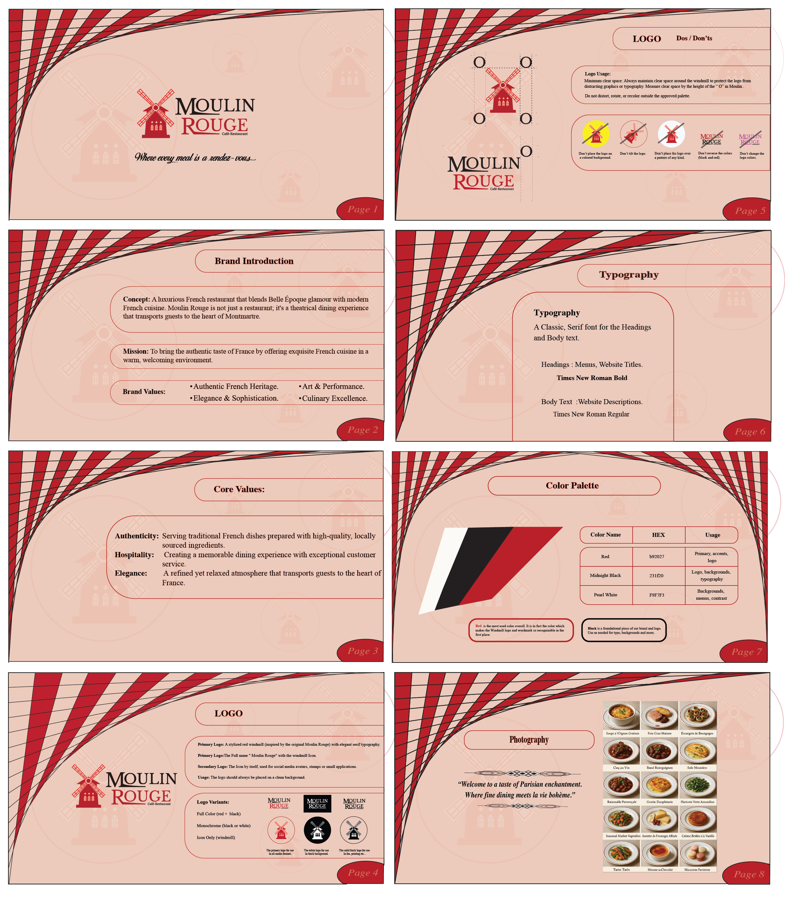
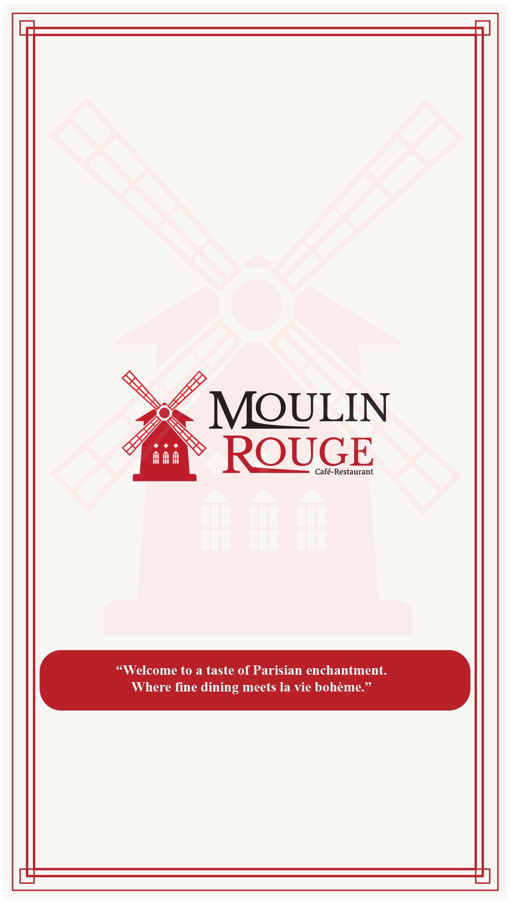
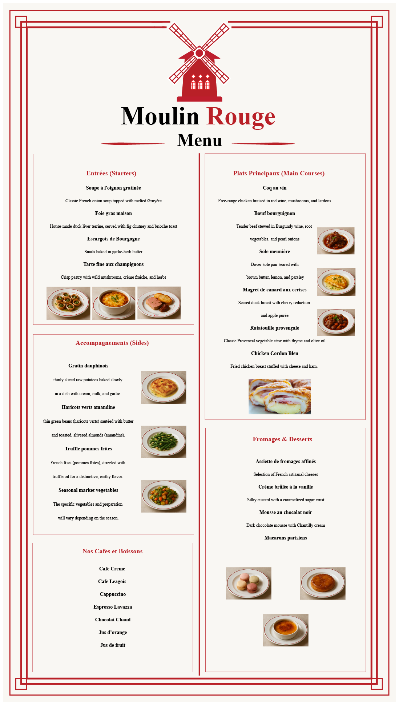
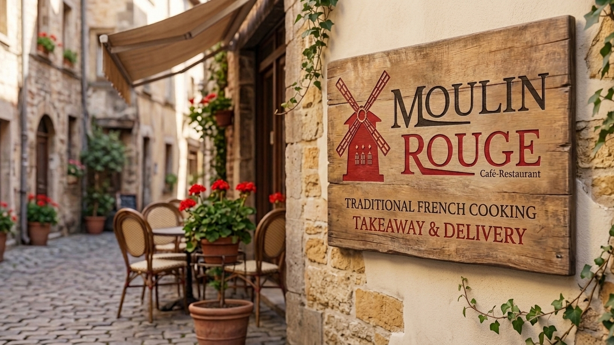

Restaurant Visual Identity System
Role: Lead Brand Designer | Expertise: Concept, Visual Strategy, Print Production
The Challenge
The objective was to build a comprehensive, unified visual identity for a modern culinary concept. The brand needed to bridge the gap between a clean digital presence and a premium physical dining atmosphere, ensuring all design assets scale seamlessly from small business cards to large environmental signage.
The Solution
I crafted a distinct, minimalist logo mark paired with a sophisticated color palette. To protect long-term brand equity, I established a definitive style guide outlining strict typographic hierarchies. This visual system was then deployed across tangible touchpoints, including high-contrast promotional posters and corporate business cards.


01 / Brand Mark & Logo Design
The Moulin Rouge logo blends classic elegance with a distinct sense of place. It features a custom vector illustration of a traditional red windmill, serving as a powerful visual anchor that represents the brand's name and heritage. The typography pairs a sophisticated, high-contrast serif font for "MOULIN ROUGE" with a clean sans-serif for "Café-Restaurant." A refined color palette of deep charcoal and rich crimson red creates a premium look, ensuring strong brand recognition across print, digital, and environmental applications.

02 / Brand Style Guide
A multi-page spread detailing the color theory swatches, font pairings, and asset usage rules to ensure cross-platform brand integrity.
The brand style guide acts as the definitive roadmap for the visual assets, ensuring consistency across print menus, digital experiences, product packaging, and promotional media while transporting guests to the heart of Montmartre.


03 / Menu Design
This project highlights the print identity extension through a cohesive menu design featuring a minimalist cover and a structured interior layout.


04 / Premium Business Cards
High-contrast, double-sided business card layouts for the Moulin Rouge dining concept. Combining elegant branding elements with a clean, functional layout, this print collateral piece is optimized for professional tactile impact and sophisticated typography
Visual Balance:
Utilizes a dual-palette concept—featuring a dramatic, dark front side to highlight the golden elements of the logo, paired with a crisp, high-readability ivory back side for the text.
Typography:
Implements a strict font hierarchy ensuring names, titles, and contact channels are perfectly legible at a glance.
Production Intent: Designed for premium finish options like soft-touch matte lamination or subtle spot-UV accents on the logomark to reinforce a luxury brand experience.


05 / Environmental Poster Layout
A high-contrast marketing poster mockup styled inside a sleek gallery frame to demonstrate real-world physical scale and presence.

06 / Signage Design & Brand Placement
The brand identity is integrated into the physical space by placing the iconic red windmill logo to the left of the text, creating a strong visual anchor. Carved into horizontal, weather-treated wooden planks, the logo and elegant typography use a high-contrast palette of charcoal and rich crimson to ensure maximum readability against the stone backdrop. This strategic scaling and placement seamlessly blend the restaurant's rustic aesthetic with effective, real-world visibility

07 /Packaging & Delivery Identity
This mockup showcases the brand identity applied to a professional insulated delivery bag, takeout box, and utensil sleeve. The iconic red windmill logo and elegant typography are scaled consistently across each item, using a bold crimson and black palette. This demonstrates how a unified visual system maintains a premium, cohesive look across different functional packaging materials